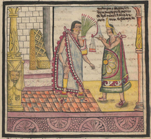

Contenido
Como ya se ha dicho, muchas de las políticas hechas por Moctezuma se planearon al principio de su gobierno, durante la ceremonia de su coronación. Las reformas más considerables implementadas al principio de su gobierno son las que involucran a la nobleza y los plebeyos. Moctezuma implementó políticas elitistas que aumentaron la división social entre estas clases; prohibió a gente de la clase plebeya y a hijos naturales trabajar en la corte real y hubo varios casos en los cuales se rehusó a otorgar ciertos honores a políticos y guerreros destacados por ser plebeyos.
También reemplazó la mayoría de su consejo con gente que él consideró más confiable.Estas políticas fueron implementadas principalmente porque Moctezuma deseaba trabajar con gente que él consideró de confianza y no brindarían una mala reputación al gobierno.Algunos historiadores han atribuido esta toma de decisiones a un intento para aliviar los conflictos de intereses que existían entre los comerciantes y nobles y la rivalidad que existía entre los nobles y los guerreros para tomar altas posiciones políticas.
 En general, las políticas de Moctezuma se pueden resumir como elitistas y déspotas, realizadas para dar más poder a su persona en el imperio y compensar por el enfoque militar de Moctezuma cambiando de expansión territorial a supresión de rebeliones, aunque también reformó los sistemas sociales para abolir algunos sistemas feudales que existían en los tiempos de sus antecesores.